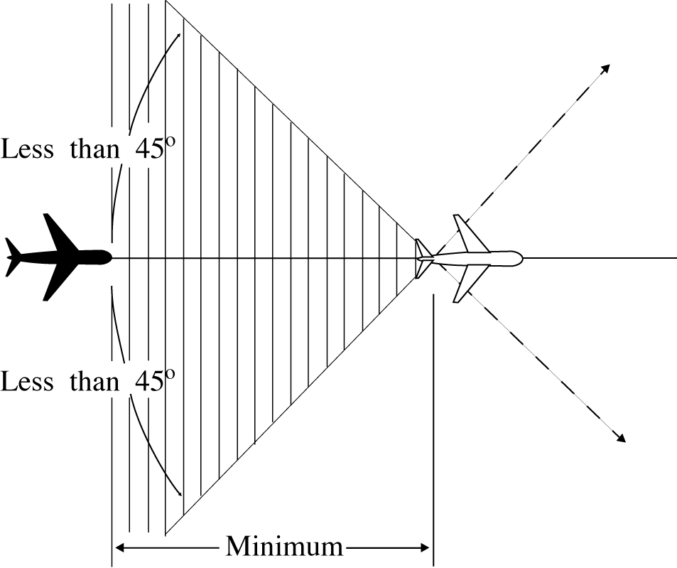
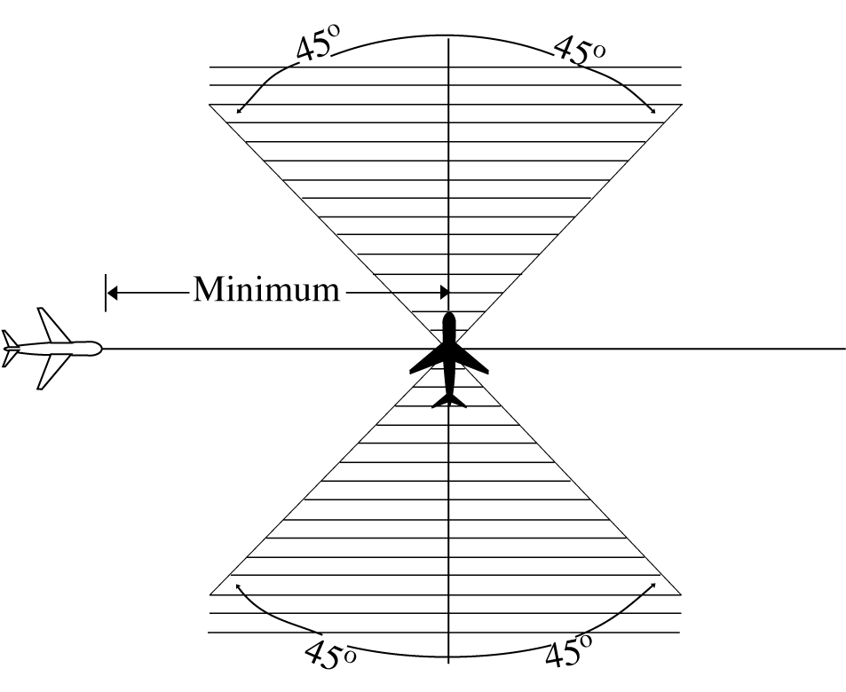
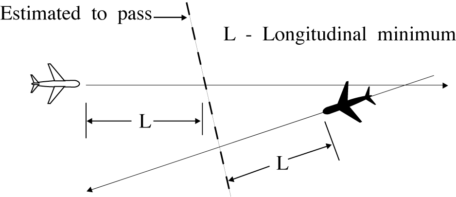
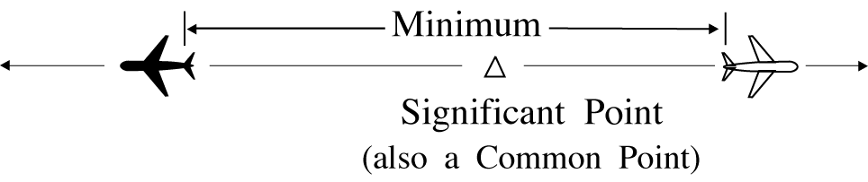

Chapter 8. Offshore/Oceanic Procedures
Section 3. Longitudinal Separation
8-3-1. APPLICATION
- Longitudinal separation must be applied so that the spacing between the estimated positions of the aircraft being separated is never less than a prescribed minimum.
- In situations where one aircraft requires a different time-based longitudinal standard than another, apply the larger of the two standards between the aircraft concerned.
- Longitudinal separation expressed in distance may be applied as prescribed in Chapter 6, Nonradar.
- In situations where an update to a control estimate indicates that the minimum being applied no longer exists, controllers must ensure that separation is reestablished. Issue traffic information as necessary.
8-3-2. SEPARATION METHODS
- For the purpose of application of longitudinal separation, the terms same track must be considered identical to same course, reciprocal tracks must be considered identical to reciprocal courses, and crossing tracks, must be considered identical to crossing courses.
- Separate aircraft longitudinally in accordance with the following:
- Same track. Ensure that the estimated spacing between aircraft is not less than the applicable minimum required. (See FIG 8-3-1.)
FIG 8-3-1Same Courses 
- Crossing tracks. Ensure that the estimated spacing at the point of intersection is not less than the applicable minimum required. (See FIG 8-3-2.)
FIG 8-3-2Crossing Courses 
- Reciprocal tracks:
- Ensure that aircraft are vertically separated for a time interval equal to the applicable minimum required before and after the aircraft are estimated to pass. (See FIG 8-3-3.)
FIG 8-3-3Reciprocal Courses 
- Vertical separation may be discontinued after one of the following conditions is met:
- Both aircraft have reported passing a significant point and the aircraft are separated by at least the applicable minimum required for the same direction longitudinal spacing; (See FIG 8-3-4.) or
FIG 8-3-4Vertical Separation 
- Both aircraft have reported passing ground‐based NAVAIDs or DME fixes indicating that they have passed each other.
- Both aircraft have reported passing a significant point and the aircraft are separated by at least the applicable minimum required for the same direction longitudinal spacing; (See FIG 8-3-4.) or
- Ensure that aircraft are vertically separated for a time interval equal to the applicable minimum required before and after the aircraft are estimated to pass. (See FIG 8-3-3.)
- Same track. Ensure that the estimated spacing between aircraft is not less than the applicable minimum required. (See FIG 8-3-1.)
8-3-3. MACH NUMBER TECHNIQUE
The use of Mach number technique allows for the application of reduced longitudinal separation minima. The following conditions must be met when the Mach number technique is being applied:
- Aircraft Types: Turbojet aircraft only.
- Routes:
- The aircraft follow the same track or continuously diverging tracks, and
- The aircraft concerned have reported over a common point; or
- If the aircraft have not reported over a common point, the appropriate time interval being applied between aircraft exists and will exist at the common point; or,
- If a common point does not exist, the appropriate time interval being applied between aircraft exists and will exist at significant points along each track.
- Altitudes: The aircraft concerned are in level, climbing or descending flight.
- Mach Number Assignment:
- A Mach number (or, when appropriate, a range of Mach numbers) must be issued to each aircraft unless otherwise prescribed on the basis of ICAO regional agreement.
- Longitudinal Minima:
When the Mach number technique is applied, minimum longitudinal separation must be:
- 10 minutes, provided that:
- The preceding aircraft maintains a Mach number equal to, or greater than that maintained by the following aircraft; or
- When the following aircraft is faster than the preceding aircraft, at least 10 minutes exists until another form of separation is achieved; or
- Between 9 and 5 minutes inclusive, provided that the preceding aircraft is maintaining a Mach number greater than the following aircraft in accordance with the following:
- 9 minutes, if the preceding aircraft is Mach 0.02 faster than the following aircraft;
- 8 minutes, if the preceding aircraft is Mach 0.03 faster than the following aircraft;
- 7 minutes, if the preceding aircraft is Mach 0.04 faster than the following aircraft;
- 6 minutes, if the preceding aircraft is Mach 0.05 faster than the following aircraft;
- 5 minutes, if the preceding aircraft is Mach 0.06 faster than the following aircraft.
TBL 8-3-1Application of the Mach Number Technique When the Following Aircraft is Faster Distance to Fly and Separation (in Minutes) Required at Entry Point
Difference in Mach
001-600 NM
601-1200 NM
1201-1800 NM
1801-2400 NM
2401-3000 NM
0.01
11
12
13
14
15
0.02
12
14
16
18
20
0.03
13
16
19
22
25
0.04
14
18
22
26
30
0.05
15
20
25
30
35
0.06
16
22
28
34
40
0.07
17
24
31
38
45
0.08
18
26
34
42
50
0.09
19
28
37
46
55
0.10
20
30
40
50
60
- 10 minutes, provided that: